My Cyber Security Learning Path
HTML
CSS
JavaScript
Python
Linux
Networking
Cyber Security
Problem Solving
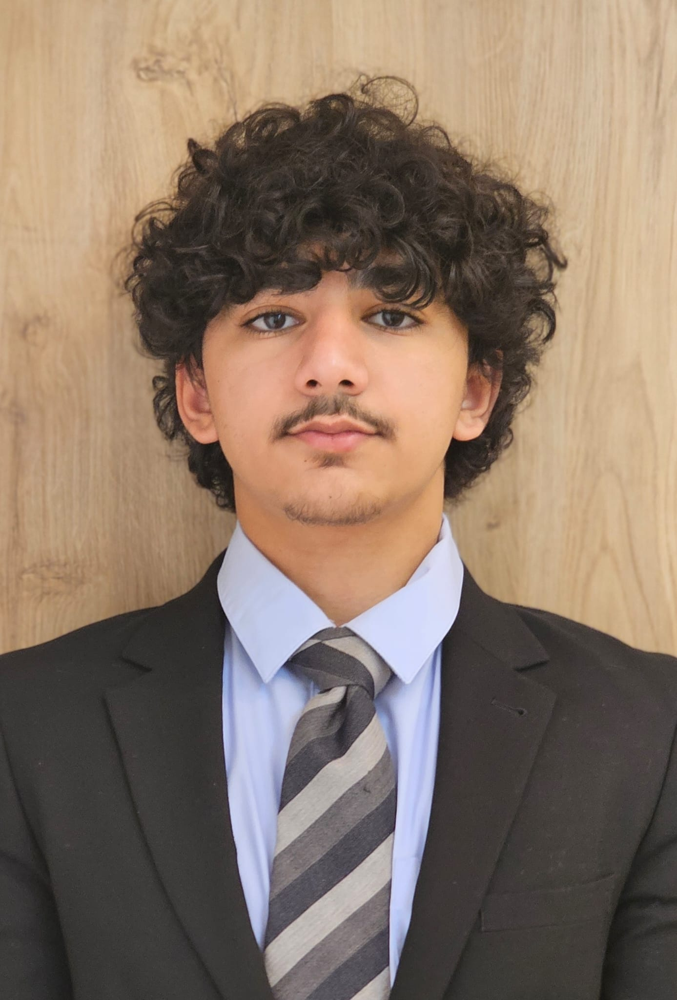
I am a student from Abdul Rahman Kanoo International School who enjoys discovering new ideas and challenging myself to grow. I have a strong passion for helping people, working towards my goals, and developing useful skills. In the future, I look forward to pursuing an education in Cyber Security.
HTML
CSS
JavaScript
Python
Linux
Networking
Cyber Security
Problem Solving
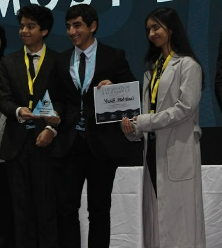
I joined Amun-V, Ahlia School's fifth MUN, and I was delegated to the UNEP council. It was a hard fought between delegates, but through rigorous work, debates, and a lot of convincing, I managed to prevail and recieve the reward.
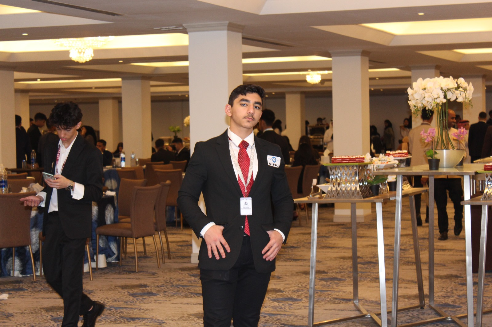
I joined Al Rawabi School's MUN as a security in order to find out what it was like to work alongside many others who shared your sentiments and goals. Safe to say, I made a lot of friends and it was an unforgettable experience. Although I didn't recieve any awards, I am certain I made an impact on many people's hearts through my efforts and hard work, just as they impacted mine. It was one of the most fun experiences I have ever been a part of.
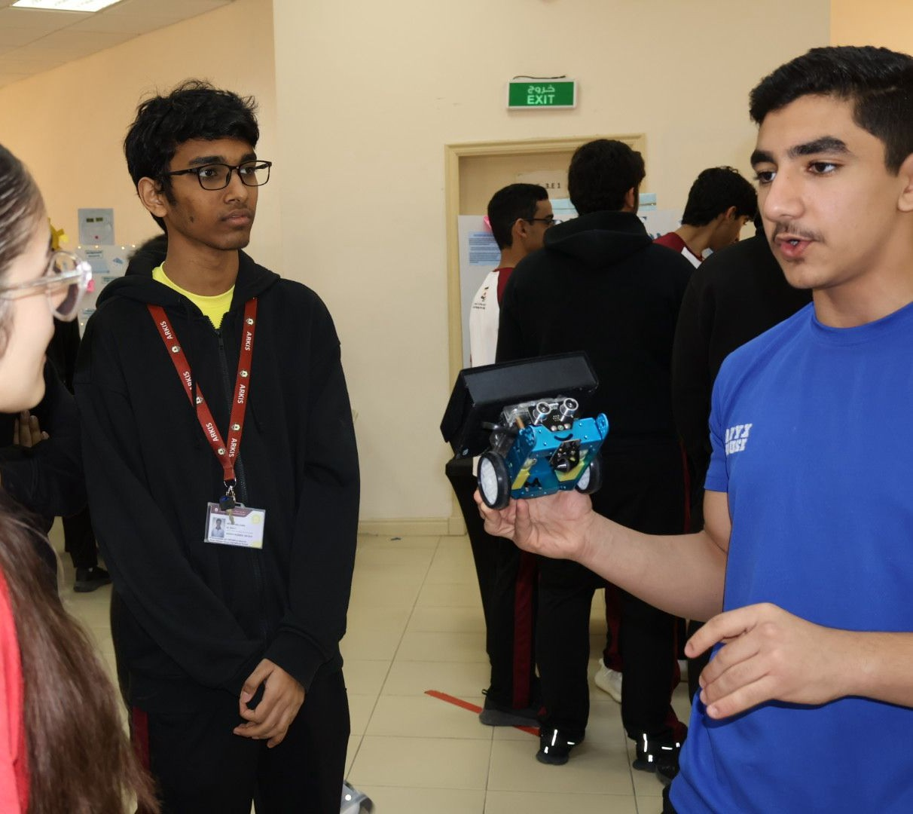
For our IB G4/CSP project, we decided to create a robot that can transport any item of up to a certain weight from one place to a handmade oven of cardboard, foil, and metal bowls. Connecting the bot to my laptop, I programmed the robot to be able to detect lines to move on and be cintrolled through a phone application or external remote. Surprisingly for me and my team, the oven actually worked, and it was able to melt the chocolate and marshmallows within it perfectly. In the end, our project caught the attention of the principle and I was asked to speak about it on camera while also explaining how the robot worked.
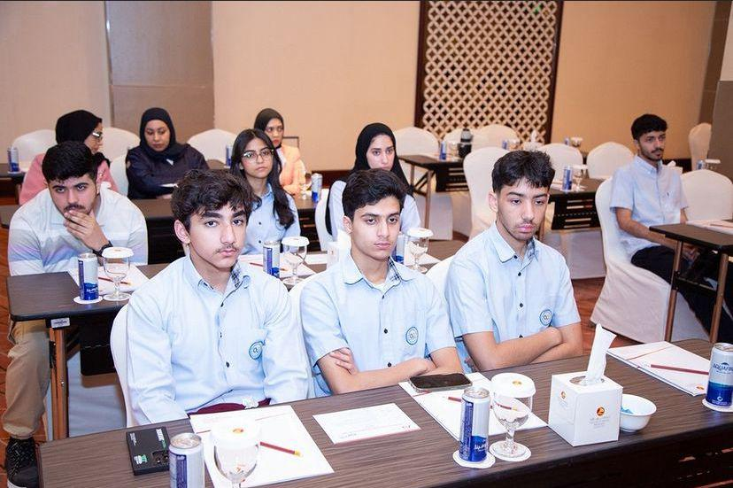
Me and two of my classmated were chosen to go to a conference about AI hosted by Ahlia University due to our outsanding interest in that field. During the conference, we took notes and then discussed our opinions with our peers upon returning to the school from the conference.
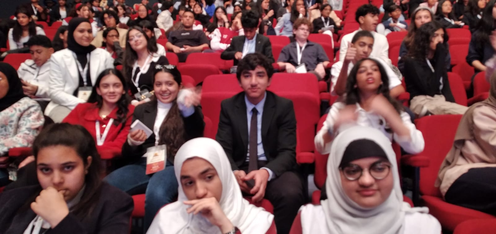
This, I can say with the utmost confidence, was the most memorable experience I have ever had. I was chosen by my school, alongside several other friends, to join the WSC. We spent a lot of time preparing for it by practicing our writing, speaking, and debate skills. Ultimately, I was able to win awards for my skills at writing and debating. However, the biggest prize I recieved was growing the bond between me and my friends.
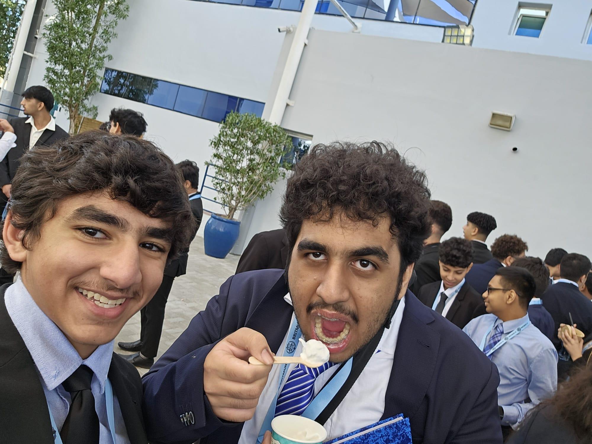
I joined BritMUN as a delegate to further expand my circle of connections and to improve my skills of debating, speaking, and persuasion. It was a memorable experience, no doubt, and I made a lot of friends. I got the council award of being the 'Social Butterfly' which me and my friends found to be funny. Overall, it was a really fun experience.
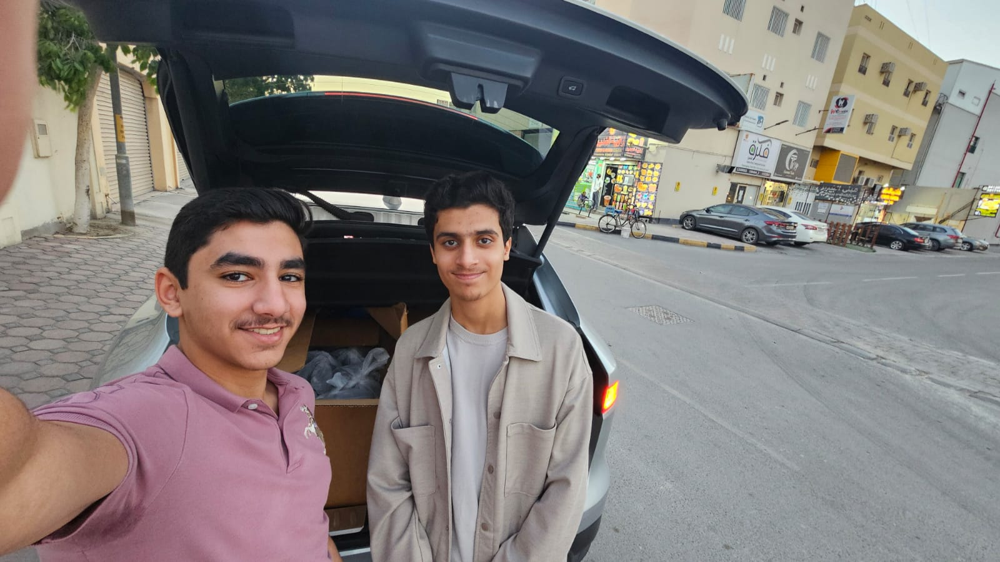
During Ramadan, me and three of my friends decided to start a project where we would distribute food in front of mosques. This was to spread kindness and to help out those who didn't have something to look forward to breaking their fast with. Overall, the project was a success, and it helped us improve our sense of teamwork, as well as our coordination and skillsets as a team. We successfully achieved our goal of helping out those in need, and that in itself, was enough to bring me joy.
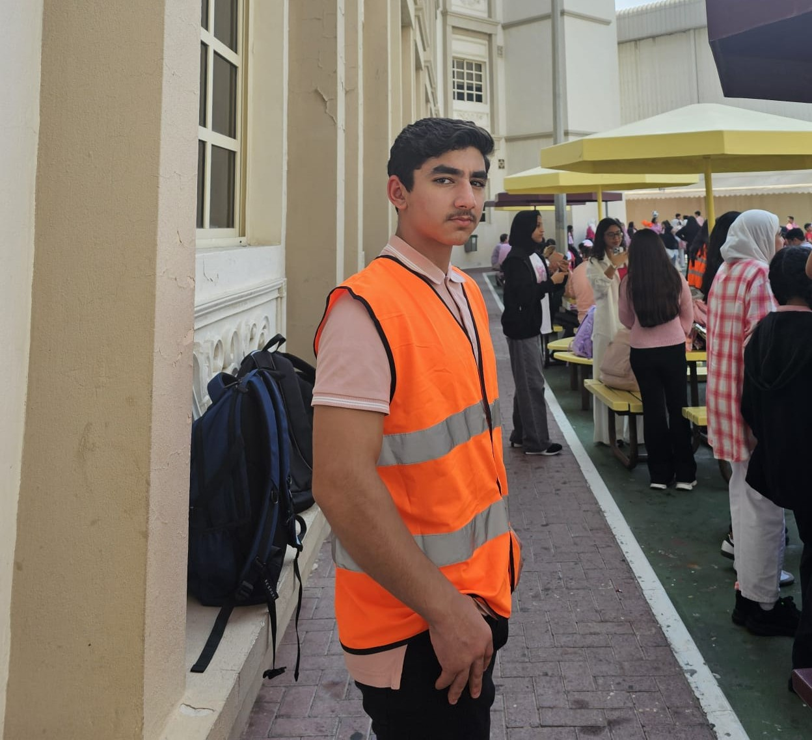
I volunteered to be a part of the security team on Pink Day in order to increase my sense of responsibility and to help spread breast cancer awareness through making sure the prgramme went smoothly. I was commended for my efforts by my teachers, and I learned a lot how to maintain order while under pressure.
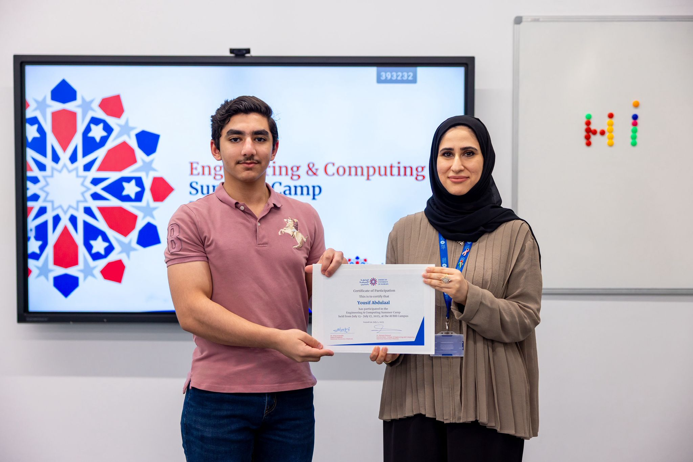
I heard about this experience through a friend. It was certainly a fun experience, as I got to spend a lot of time socializing, making friends, and tackling challenges with my peers. I also won the '3D printed cup' for being the one to get the most answers correct on the architectural engineering quiz.
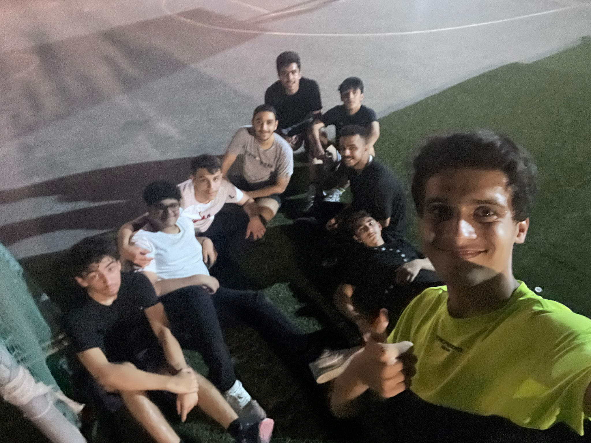
Me and several of my friends decided to make a group where we would rent out a football field every week or so, and we would allow people to join and play with us. We faced a lot of compition, won some games, lost some, and we certainly had a lot of fun. In the end, this grew our bond as friends and also allowed us to make new friends.
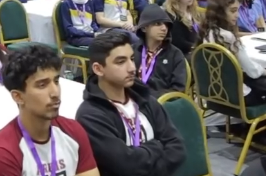
Me, alongside a few of my fellow peers at ARKIS, were invited to join Al Bayan School's Eco Summit. I was happy to accept this offer, and while we were at the summit, we participated in several activities, and found innovative ways to help build a better ecological environment. It was a fun time, and we benifited greatly from attending it.
Email: YusufAbdulaal09@gmail.com
School: Abdul Rahman Kanoo International School
Send Email